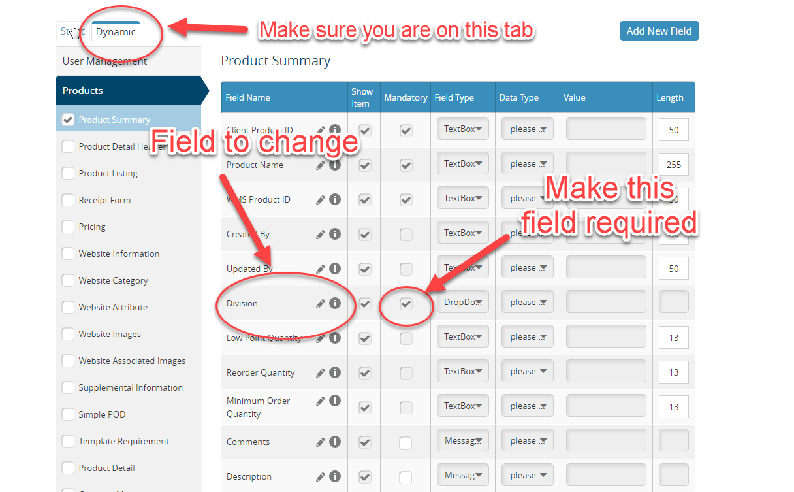
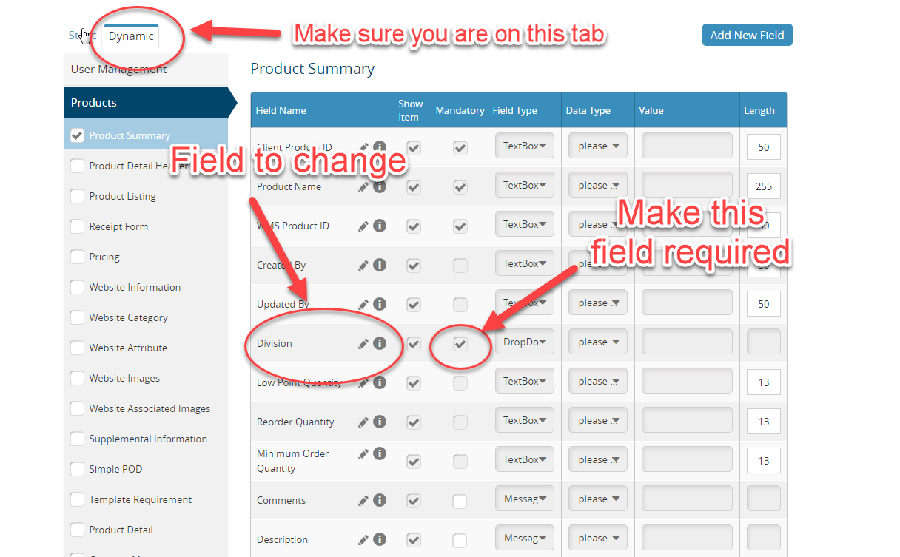

'Division' needs to be made a required field
- Navigate to Admin Access -> Client Configuration -> Field Conf
- On the Field Conf page, use the panel on the left to navigate to the Dynamic tab
- Under this tab, navigate to Products -> Product Summary where you will see a list of fields that encompass the Primary Details page of product set up
- Find ‘Division’ on this list and then, in the Mandatory column, check the checkbox
- Scroll down to the bottom and hit Save
See screenshot below for reference


Change all instances of the word
‘Network’ to ‘Category’- This primarily shows up in the client facing Basic Reports
- Navigate to Admin Access -> Client Configuration -> Dashboard Parameters
- Go into Basic Reports Header and Basic Reports (and each sub section), and change all instances of the word ‘Network’ to ‘Category’
Navigate to the ‘Client Configuration’ section located under the ‘Admin Access’ dropdown -> Go to the ‘Dashboard Parameters’ tab.
- This window allows you to set up the billing periods for the client
- Using the two fields provided, supply a Start and End date for a billing period
- Hit the Save button
- Repeat this process for the remaining billing periods you wish to add
Navigate to the ‘Client Configuration’ section located under the ‘Admin Access’ dropdown.
- Go to the ‘Division Mgmt’ tab
- Click the ‘Add Division’ button
- The Account manager should be able to supply a list of divisions
- Fill out the fields and hit ‘Save’
- Note: All Divisions you add should be in ‘ALL CAPS’
- Repeat this process until all Divisions have been created for that client
- Make sure you create an ‘ADMIN’ division as well to be used by CI-Group administrators
Navigate to the ‘User Class’ section located under the ‘Admin Access’ dropdown
- Click on the ‘Add User Class’ button
- We are only concerned with the fields under the ‘User Class Information’ section
- To fill out these fields, you will need to contact the CSR for that client and obtain a list of User Class names and numbers from them
- Make sure the ‘Is Active’ checkbox is checked
- Fill out the required fields in this section and hit ‘Save’
- Repeat this process until all User Classes have been created for that client
-
Make sure you create a ‘CI Admin’ user class as well
- Use 101 as the number value for this user class
- Set the ‘Division’ to ‘Admin’
Navigate to the
‘User Group’ section located under the ‘Admin Access’ dropdown- Setting up new User Groups can be a little tricky to explain so I’ll be as thorough as I can
Note: User Groups control who can approve orders and who cannot. They also control the Order History screen that the users will see when they navigate there. This is important because in most cases we only want the client users to see the more limited screen. We usually don’t want them to have access to approving the orders and changing the carrier/ship method.